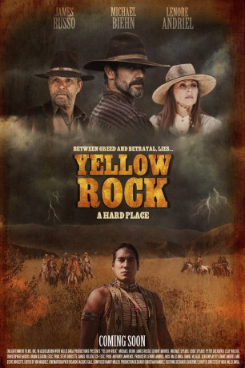
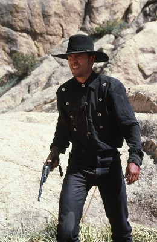
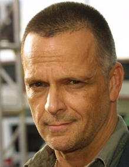
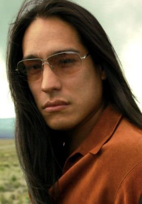
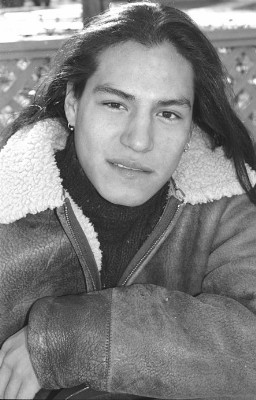
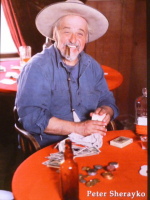
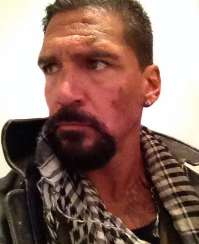
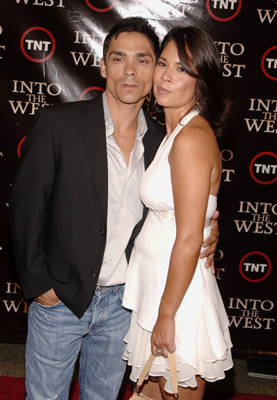

#1892 Entscheidung am Yellow Rock
Alternativ: Yellow Rock
 
 IMDB-Wertung: 4.6 / 10
IMDB-Wertung: 4.6 / 10  Metascore: 0
Metascore: 0 
Fünf Männer reiten nach Yellow Rock, von wo aus sie mit der Rettungsaktion eines Familienmitglieds und seines verschwundenen Sohnes beginnen wollen. Dabei soll ihnen Fährtensucher Hanner helfen, der den Rettungstrip in das Territorium der Black Paws führen soll. Obwohl die dort lebende Ärztin Sarah Taylor ihnen ein Durchreiserecht besorgt, werden die Weißen schon bald von einem alten Fluch eingeholt und einem Fieber befallen. Ihr Überlebenskampf in der Wildnis beginnt.
Jahr: 2011
Dauer: 89 Minuten
FSK: 16
Land: USA Studio: Screen Media VenturesTonspuren: DTS - ,
Untertitel: Deutsch,
Auflösung: 1080p (1920x1080) Größe: 4741 MB
Genre: Western
Regisseur: Nick Vallelonga
Drehbuch: Lenore Andriel, Steve Doucette
Soundtrack: Randy Miller
Darsteller:
-  Michael Biehn als Tom Hanner
-  James Russo als Max Dietrich
-  Michael Spears als Broken Wing
-  Eddie Spears als Angry Wolf
-  Peter Sherayko als Farley
- Christopher Backus als Cobb
- Clay Wilcox als Roscoe
- Brian Gleason als Billy Boy
- Amy Jennings als Martha
-  Paul Sloan als Johnson
- Jennifer Blanc als Monica
- Elaine Lockley Smith als Sequilla
 James Logan als McKinley
James Logan als McKinley-  Zahn McClarnon als Looks First
- Rick Mora als Crow Runner
- Larry Omaha als Tribal Elder
- Alex Livinalli als Spear of fire
- Kyle Agnew als Little Bear
- Jonathan Erickson Eisley als Saloon Patron
- Robert Pyute Hessen als Healing
- Bruce Mercury als Wary Townsmen
- Ardeshir Radpour als Gunman
- Daniel Veluzat als Monica's Cowboy
- Lenore Andriel als Dr. Sarah Taylor
- Joseph Billingiere als Chief White Eagle Feather
- Angel Star Felix als Little Bear's Mother
- Andrew Roa als Silent Moon
- John Adair als Tribesman
- Natasha Nicole Kaye als Saloon Girl
- Christine Alozian als Tribal Ghost
- Hanna Baker als Tribal Child
- Sam Bearpaw als Strong Bear
- David Booth als Bartender
- Marie Broderick als Tribal Member
- Abigail Buck als Child Ghost
- Ashmeigh Buck als Child Ghost
- Becky Buck als Child Ghost
- B.J. Byrum als Tribal Member
- Becky Byrum als Tribal Member
- Cynthia Crosskopf als Tribal Member
- Jon Davis als Saloon Patron
- Steve Doucette als Smiling Cowboy
- James Encalada als Tribal Member
- Sonya Flores als Tribal Member
- Ascencio Garcia als Tribal Child
- Ba'Ac Garcia als Young Singer
- Nana Bah Kadenehn als Girl with Stick
- Askii Chee Kadenhen als Tribal Child
- Brad Kaye als Smiling Cowboy's Friend
- Cash Kelleway als Drunker in the Street
Datei: X:\HD-Western-2000-2015\Entscheidung am Yellow Rock (2011, FSK16, 1920x1080).mkv seit 31.08.2015
Festplatte: HD Eastern+Western
 Es gibt insgesamt 61 Filme in der Gruppe 'HD-Western-2000-2015'
Es gibt insgesamt 61 Filme in der Gruppe 'HD-Western-2000-2015'